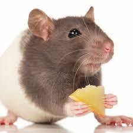

認識可愛的寵物大鼠
居住環境
餵食方式
特技訓練
餵食注意事項

蔬菜水果、豆類、種子類、植物花草類、五穀雜糧根莖類，都可以作為大小鼠的營養來源。
主食飼料
每日提供約鼠體重十分之一的飼料量。小鼠以寶特瓶蓋的量為參考，可多不可少。大鼠約需60克飼料，以6個奶粉勺為參考。 磨牙飼料，適當的磨牙飼料常駐。 新鮮食物類，每日應提供：蔬菜 / 水果 / 種子類新鮮食物，至少一個鼠耳朵的量。
每日餵食法
主食飼料+磨牙飼料+新鮮食物類，不新鮮的食物收走。每日觀察鼠食量有無減少，若連續數日食量明顯減少，可能身體不適須就醫。
飼料保存方法
飼料加上乾燥劑密封即可，如果飼料吃很慢超過半年以上，建議把大部分飼料放進冰箱，一次只取出短期內需要吃的量就好。
常見可食推薦清單、禁食清單
大小鼠易過胖，過胖引發各種疾病，請妥善控制食量及醣份。
推薦可食清單
甜度較高應少量給予清單
特殊食材
爭議食材（不建議給予）
深綠色蔬菜（地瓜葉、空心菜、芥菜等）
（菠菜應適量給予）
各式五穀雜糧
各色低醣蔬果
青花菜（建議川燙）
山藥、芋頭（去皮川燙）
大小白菜
青椒、彩椒
南瓜、南瓜籽
地瓜
黃瓜
苜蓿芽
水煮蛋
蘋果（去皮籽）
木瓜（去皮籽）
芭樂
桃子（去籽）
櫻桃（去籽）
奇異果
草莓、藍莓、蔓越莓
蓮霧
火龍果
棗子（去籽）
香蕉
龍眼（去籽）
荔枝（去籽）
香瓜
西瓜
PS.「少量」為「鼠耳朵大小」
必須熟食的食材（請勿生食）
大豆類（黑豆、黃豆、豌豆等）
扁豆類
芝麻、亞麻仁
腰果、花生、夏威夷豆（偶有過敏個體，謹慎給予）
柑橘橙類
芒果
綠馬鈴薯
綠香蕉
藍乳酪